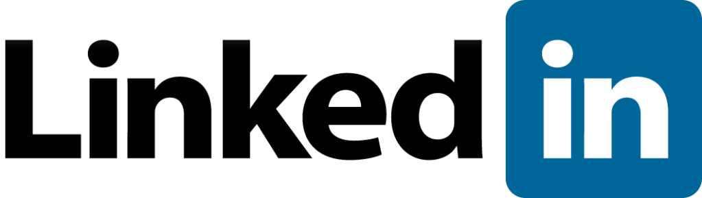

LinkedIn és una xarxa social de perfil professional orientada principalment als negocis. Té més de 25 millons de professionals representant a 150 sectors.
El teu perfil de LinkedIn és el teu currículum online, de manera que pots actualitzar constantment l' informació. A través d'aquests perfils podràs generar xarxes i contactes.
LinkedIn segueix unes directrius de privacitat molt estrictes on totes les conexions realitzades són mutuament acceptades per les dos persones i només apareixen a la xarxa amb el seu consentiment explícit.
El pots fer servir des de, per trobar feina, fins a mantenir-te en contacte amb els amics de la feina, passant per poder conversar i compartir els teus coneixaments amb altre gent.
Una vegada registrat, pots començar a crear el teu perfil amb el teu currículum i tota la teva informació. Després ja pots afegir a tots es teus companys/es de feina i fer un grup.
Si no tens feina pots buscar-la, en grups o empreses que n'ofereixin en el camp que t'agradi o esperar a que algú t'enviï un missatge o una solicitud d'amistat i començar a fer més amics a partir d'aquí.
LinkedIn és una excelent eina per a trobar feina o per que els empresaris que busquin treballadors et trobin a tu.
Pots conèixer a molta gent en el mateix àmbit de treball que tu, que et pot ajudar a resoldre algun que altre problema o amb la que mantenir converses molt interesants sobre algun tema que us interessi als dos o a tot el grup.